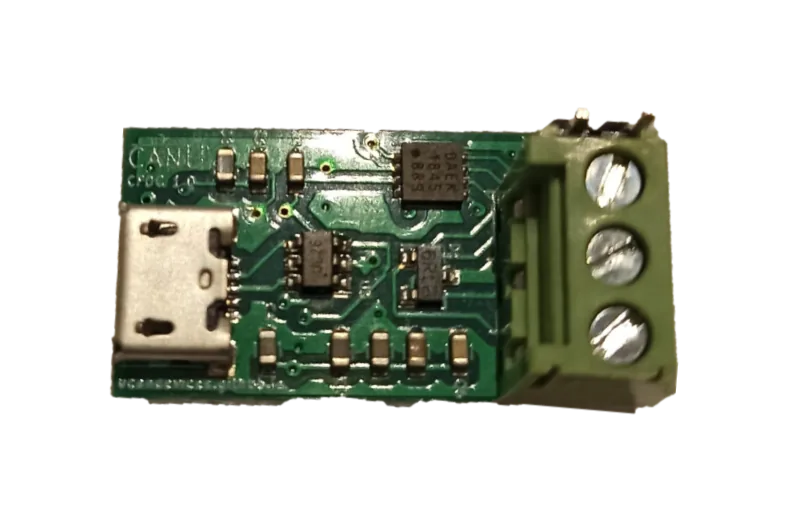
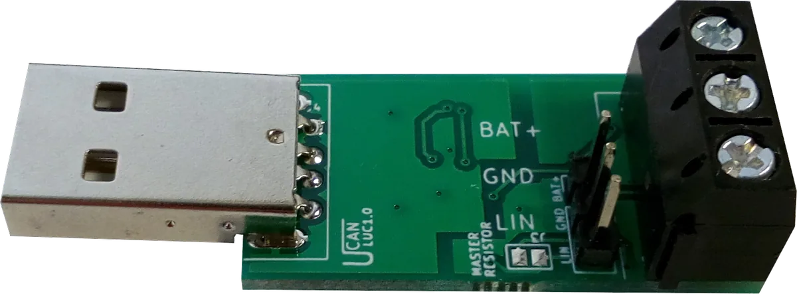
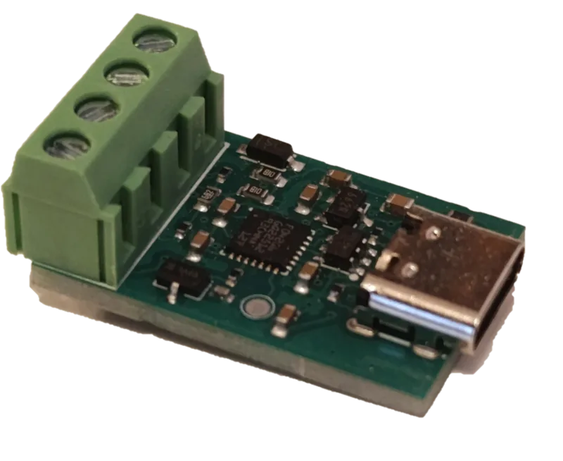
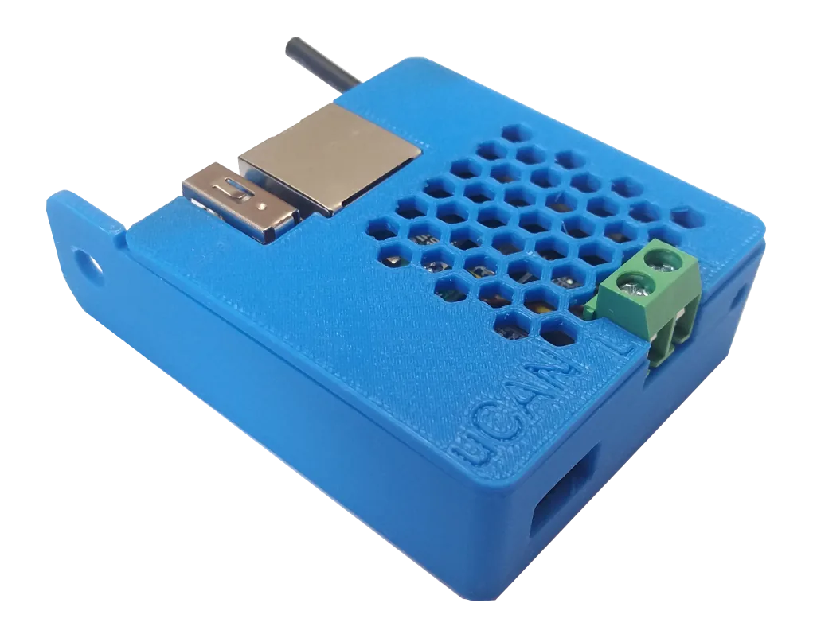
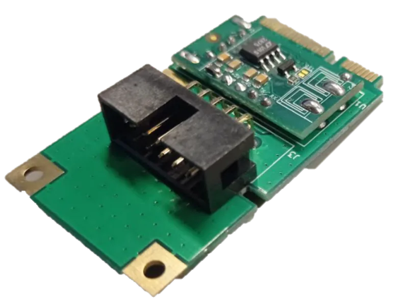
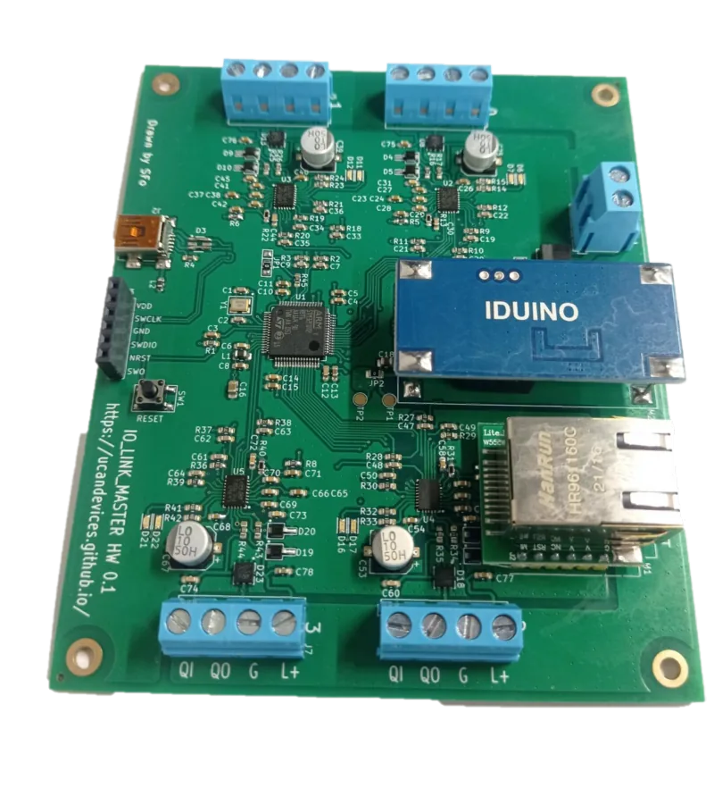
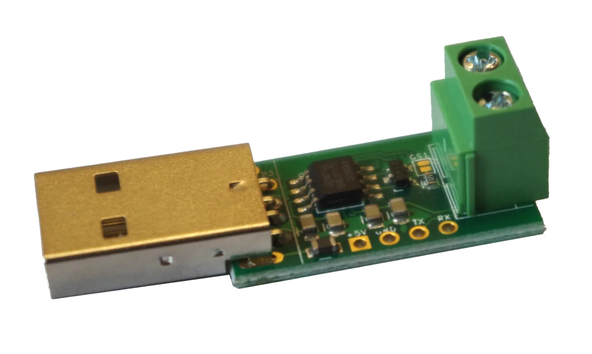

Affordable open source dongles for CAN, CAN FD, LIN, SENT and IO-Link. Plug-and-play on Windows, Linux and macOS.
Our projects are well documented and both open source and open hardware.
Enable CAN access on Windows, Linux, Raspberry PI and custom embedded platforms.
Visit our distributors and buy our products.

Convert CAN and CAN FD signals to USB

LIN network master and monitoring device as USB dongle

SAE J2716 SENT automotive sensor to USB/SLCAN bridge

Linux microcomputer with Ethernet and CAN

Converter CAN signals with USB interface mini PCI express adapter

Converter IO-LINK signals to USB/Ethernet interface

Converter CAN signals with USB and UART interfaces
Your feedback is welcome, send us email, we will get back to You as soon as possible!
devices.ucan@gmail.com